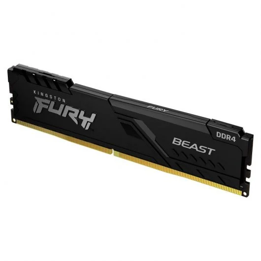
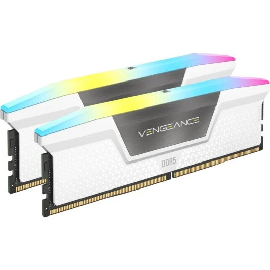
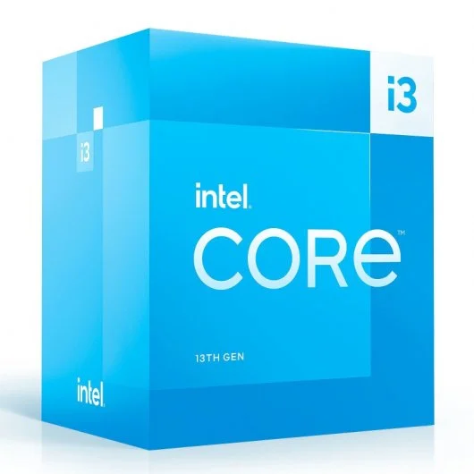
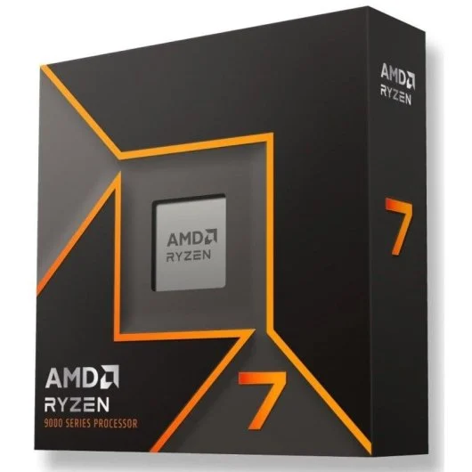

Alumno/a: Soto Soto, Jesus
Grupo: ASIR 1
Fecha: 05-12-2025
Repositorio: GitHub
En este reto investigamos fuentes de alimentación, sistemas de refrigeración, RAM/CPU para usos distintos y analizamos GPUs comparando las recomendaciones de un vídeo con precios reales de tiendas. El resultado final se consolida en un PDF único.
| Tipo | Marca/Modelo | Potencia (W) | 80 PLUS | Precio (€) | Modularidad | PFC | Dimensiones (L×W×H mm) | Enlace |
|---|---|---|---|---|---|---|---|---|
| ATX | Mars Gaming MPVU750SI | 750W | Silver | 64,90€ | No | Activo | 150 (W) × 145 (L) × 85 (H) mm . | Pc |
| SFX | Corsair SF1000 | 1000W | Platinum | 225,67€ | Si | Activo | 125 mm (W) × 100 mm (L) × 63,5 mm (H) . | Pc |
| TFX | UNYKAch 52004V2 | 350W | Bronze | 31,57€ | No | Activo | 175 mm (L) × 85 mm (W) × 65 mm (H) . | Pc |
Notas/criterios de la tienda 1:
-Buen servicio de envio y tienen mucho cuidado con los paquetes
-Muy centrada a la tecnologia y tienen muchas caracteristicas relacionadas
| Tipo | Marca/Modelo | Potencia (W) | 80 PLUS | Precio (€) | Modularidad | PFC | Dimensiones (L×W×H mm) | Enlace |
|---|---|---|---|---|---|---|---|---|
| ATX | MSI mag A750GL PCIE5 | 750W | Gold | 85,53€ | Si | Activo | 150 (W) × 86 (H) × 140 (L) mm. | Amazon |
| SFX | Cooler Mater V850 | 850W | Gold | 200€ | Si | Activo | 125 (W) × 63.5 (H) × 100 (L) mm. | Amazon |
| TFX | Inter-Tech SAMA FTX-850-B Armor | 850W | Gold | 135,27€ | Si | Activo | 150 (W) × 86 (H) × 180 (L) mm. | Amazon |
Notas/criterios de la tienda 2:
-Servicio aceptable,a veces lento,aunque no tienen mucho cuidado con los paquetes
| Tipo | Marca/Modelo | Potencia (W) | 80 PLUS | Precio (€) | Modularidad | PFC | Dimensiones (L×W×H mm) | Enlace |
|---|---|---|---|---|---|---|---|---|
| ATX | Corsair RM850e | 850W | Gold | 107,95€ | Si | Activo | 175 mm (L) × 85 mm (W) × 65 mm (H) | LD |
| SFX | be quiet! SFX Power 3 | 450W | Bronze | 76,95€ | No | Activo | 175 mm (L) × 85 mm (W) × 65 mm (H) | LD |
| TFX | be quiet! TFX Power 3 | 300W | Gold | 76,95€ | No | Activo | 125 mm (W) × 100 mm (L) × 64 mm (H) | LD |
| Tienda | Tipo | Marca/Modelo | Potencia (W) | 80 PLUS | Precio (€) | Modularidad | PFC | Dimensiones (mm) | Observaciones |
|---|---|---|---|---|---|---|---|---|---|
| Amazon | ATX | MSI mag A750GL PCIE5 | 750 | Gold | 85,53 | Sí | Activo | 150 × 140 × 86 | Buena relación precio/potencia, Gold, modular |
| Amazon | SFX | Cooler Master V850 | 850 | Gold | 200 | Sí | Activo | 125 × 100 × 63,5 | Potente para SFF, Gold, modular |
| Amazon | TFX | Inter-Tech SAMA FTX-850-B Armor | 850 | Gold | 135,27 | Sí | Activo | 150 × 180 × 86 | TFX muy potente, Gold, modular |
| PcComponentes | ATX | Mars Gaming MPVU750SI | 750 | Silver | 64,90 | No | Activo | 150 × 145 × 85 | Muy económico, Silver, no modular |
| PcComponentes | SFX | Corsair SF1000 | 1000 | Platinum | 225,67 | Sí | Activo | 125 × 100 × 63,5 | Potencia máxima SFX, Platinum, modular |
| PcComponentes | TFX | UNYKAch 52004V2 | 350 | Bronze | 31,57 | No | Activo | 85 × 175 × 65 | Muy barato, solo básico, no modular |
| LDLC | ATX | Corsair RM850e | 850 | Gold | 107,95 | Sí | Activo | 85 × 175 × 65 | Buena opción calidad/precio, Gold, modular |
| LDLC | SFX | be quiet! SFX Power 3 | 450 | Bronze | 76,95 | No | Activo | 85 × 175 × 65 | Económica, SFX, solo para PCs ligeros |
| LDLC | TFX | be quiet! TFX Power 3 | 300 | Gold | 76,95 | No | Activo | 125 × 100 × 64 | Solo para PC básico, Gold, no modular |
AMD Ryzen 7 7800X3D
| Tipo | Marca/Modelo | Precio (€) | TDP soportado / Rendimiento térmico | Ruido (dBA) | Dimensiones (mm) | Sockets | Mantenimiento | Garantía | Enlace |
|---|---|---|---|---|---|---|---|---|---|
| Líquida (AIO) | Arctic Liquid Freezer II 240 | 99,90 € | Hasta 250W – Muy alto rendimiento | 22–40 dBA | Radiador 277 × 120 × 38 | AM4 / AM5 / LGA1700 | Bajo (sellado) | 6 años | https://www.pccomponentes.com/arctic-liquid-freezer-ii-240 |
| Pasiva (Disipador por aire) | Noctua NH-P1 | 119,90 € | Hasta 120W – Rendimiento medio | 0 dBA (silencioso absoluto) | 158 × 154 × 152 | AM4 / AM5 / LGA1700 | Nulo | 6 años | https://www.pccomponentes.com/noctua-nh-p1 |
| Característica | Refrigeración Líquida | Refrigeración Pasiva |
|---|---|---|
| Temperaturas | Muy bajas (ideal overclock) | Correctas sin forzar |
| Ruido | Bajo, pero tiene ventiladores | 0 dBA |
| Mantenimiento | Bajo pero existe riesgo de fuga | Ninguno |
| Tamaño | Grande (radiador + tubos) | Muy voluminoso |
| Fiabilidad a largo plazo | Media-alta | Muy alta |
| Precio | Similar | Algo más cara |
Elige una o varias tiendas (p. ej., PcComponentes, Amazon ES, LDLC ES). Completa las 4 fichas siguientes.
| Campo | Valor |
|---|---|
| Marca y modelo | Kigston FURY Beast |
| Capacidad | 16G |
| Velocidad / Timings | 3200 MHZ,CL16 |
| Tipo (DDR4/DDR5) y formato (DIMM/SO-DIMM) | DDR4 y DIMM |
| Precio (€) | 94.02€ |
| URL | PcComponentes |
| Captura |  |
| Justificación | Tiene una gran estabilidad para el ambito de oficina aunque presenta problemas para tareas de diseño muy grandes ,tiene un coste muy bueno sabiendo que seguramente ahbra mas de un Pc de este tipo si es una empresa,tiene una gran compatibilidad al ser DDR4 el cual presenta una gran eficiencia electrica ademas de ofrecer una gran estabilidad. |
| Campo | Valor |
|---|---|
| Marca y modelo | Corsair Vengence RGB |
| Capacidad | 32 (2x16 G) |
| Velocidad / Timings / XMP-EXPO | 6000MHz,CASCL36(36-44-44-96) y es compatiblr ocn XMP-EXPO |
| Tipo (DDR4/DDR5) | DDR5(para placas mas nuevas) |
| Precio (€) | 479.95€ |
| URL | PcComponentes |
| Captura |  |
| Justificación | La ram si que es verdad que aumentan los fps pero no de una manera muy grande sobre todo si esta en altas resoluciones ya que la GPU es la que se encarga en ese ambito,aunque si que es verdad que que DDR4 tiene menos latencia el DDR5 lo compensa con su mayor frecuencia/banda en muchos casos.Esta ram ofrece perfiles para ambos tipos de placa tanto como Intel y AMD ademas se que tienen una garantiua de por vida segun su ficha tecnica y esta cubre defectos de fabrica aunque no daños durante sus usos y hablando esteticamente es bastate bonmita al sder de color blanco y usar leds. |
| Campo | Valor |
|---|---|
| Marca y modelo | Intel Core i3-13100 |
| Núcleos / Hilos | 4 nucleos y 8 hilos |
| Frecuencias (base/boost) | Base: 3.4 GHz – Boost: hasta 4.5 GHz |
| Gráficos integrados | Si tiene graficos integrados los cuales son Intel UHD Graphics 730 |
| TDP / Consumo | 60 W (base) y 89 W en turbo |
| Precio (€) | 208.95€ |
| Socket / Compatibilidad | Socket LGA 1700; compatible con placas DDR4 o DDR5 |
| URL | PcComponentes |
| Captura |  |
| Justificación | El intel 3 al tener graficos integrados mas que suficientes para un trabajo de oficina hace que sea ideal para la elecion debido a que saeria mas barato que comprar CPU+GPU,permite tener muchas ventanas abiertas a la vez haciendo que la CPU pueda hacer trabajo normal de oficina sin problemas a no ser que se le sobresija y por util es muy versatil ya que es compatible con DDR4 y DDR5 |
| Campo | Valor |
|---|---|
| Marca y modelo | AMD Ryzne 7 |
| Núcleos / Hilos | 8 nucleos y 16 hilos |
| Frecuencias (base/boost) | 4.2GHz-5.0 GHZ |
| Caché | L3 + L2 |
| TDP / Consumo | 120 W |
| Precio (€) | 378.90€ |
| Socket / Compatibilidad | Socket AM5; compatible con placas base AM5 y memorias DDR5 |
| URL | Amazon |
| Captura |  |
| Justificación | Proporciona muchos fps debido a que contiene uun Cache L3 haciendo que de muchos fps incluso supera CPUs que tiene frecuencias mas altas y mayor numero de nucleos,tiene una excelente multitarea lo que la hace perfecta para streaming y juego.Esta CPU esta diseñada para usarse con periferecos de muy alta gama y al tener un gran redimiento presenta un cuello de botella muy pequeño.Lo unico malo es que solo soporta DDR5 y por ultimo AMD promete varios años de soporte y una gran capacidad sin tener que cambiar la placa base. |
| Tipo RAM | Velocidad Típica (MT/s) | Voltaje Típico (V) | Consumo/Eficiencia | Precio por GB (Aprox.) | Compatibilidad con Placas | Observaciones |
|---|---|---|---|---|---|---|
| DDR4 | 2400 a 3600 | 1.2 V | Menor consumo que DDR3, Mayor que DDR5. | 140 euros aprox | Intel 10ª, 11ª, 12ª, 13ª, 14ª Gen / AMD AM4 | Tecnología madura, más estable. |
| DDR5 | 4800 a 8000+ | 1.1 V (Estándar) | Más eficiente y menor consumo por Mhz. | 480 euros aprox | Intel 12ª, 13ª, 14ª Gen / AMD AM5 | Mayor ancho de banda y frecuencias de partida más altas. |
Mayor ancho de banda:
DDR5 parte desde 4800 MT/s (JEDEC), mientras que DDR4 parte de 2133–3200 MT/s. Esto supone un incremento de ancho de banda superior al 50% en configuraciones base, y aún mayor en kits de alto rendimiento.
Subcanales internos (2×32 bits por módulo):
Cada módulo DDR5 se divide en dos subcanales independientes, lo que mejora la eficiencia de acceso a memoria, reduce latencias efectivas en accesos pequeños y optimiza el paralelismo.
PMIC (Power Management IC) integrado en el módulo:
A diferencia de DDR4, donde la regulación de voltaje depende de la placa base, en DDR5 esta se gestiona directamente desde el módulo de memoria, mejorando la estabilidad, eficiencia energética y control del voltaje.
On-Die ECC (corrección de errores en el chip):
DDR5 incluye corrección de errores a nivel interno del chip para reducir fallos por interferencias eléctricas y aumentar la fiabilidad, especialmente en módulos de alta densidad. No equivale al ECC de servidores, pero mejora la estabilidad.
Perfiles XMP 3.0 (Intel) y EXPO (AMD):
Permiten cargar configuraciones certificadas de frecuencia, voltaje y latencias con un solo clic desde BIOS. XMP 3.0 además permite guardar múltiples perfiles en el propio módulo.
Mayor capacidad por módulo:
DDR5 permite módulos de mucha mayor densidad que DDR4 (64 GB, 96 GB y superiores), algo clave para estaciones de trabajo, virtualización y servidores.
Creación de contenido (edición 4K/8K, renderizado, 3D, efectos):
El mayor ancho de banda acelera la manipulación de grandes volúmenes de datos y reduce cuellos de botella al trabajar con múltiples capas, texturas y efectos.
Inteligencia Artificial ligera en CPU:
En inferencia de modelos pequeños y medianos que dependen de la RAM del sistema, el mayor throughput de DDR5 mejora los tiempos de respuesta.
Multitarea pesada y virtualización:
Ejecutar múltiples máquinas virtuales, contenedores y aplicaciones exigentes de forma simultánea se beneficia tanto del ancho de banda como de la mayor capacidad.
Juegos CPU-bound y altas tasas de refresco:
En escenarios donde la CPU es el límite (simulación, física, RTS, eSports a 240 Hz), DDR5 puede aportar mejoras reales en FPS mínimos y estabilidad del frametime, aunque en muchos títulos la diferencia frente a DDR4 rápida es moderada.
Sistemas con GPU integrada (APUs):
Las iGPU utilizan la RAM del sistema como VRAM. El ancho de banda extra de DDR5 mejora de forma notable el rendimiento gráfico frente a DDR4.
Estación de trabajo para edición de vídeo profesional 4K/8K y multitarea intensiva.
DDR5 no solo es una evolución en frecuencia, sino un cambio estructural en la arquitectura de la memoria: más ancho de banda, mejor eficiencia, mayor capacidad, más estabilidad y perfiles avanzados. En tareas profesionales, IA ligera, estaciones de trabajo, APUs y multitarea pesada, la diferencia fr
[tomshardware] — https://www.tomshardware.com/features/ddr5-vs-ddr4-is-it-time-to-upgrade-your-ram
[HardZone] — https://hardzone.es/tutoriales/componentes/memoria-ram-ddr4-vs-ddr5/
[Geekom] — https://www.geekom.es/ddr4-vs-ddr5/
[Reviewed (laptops/DDR4 vs DDR5)] — https://www.reviewed.com/laptops/features/ddr4-vs-ddr5
[Corsair] — https://www.corsair.com/us/en/explorer/diy-builder/memory/is-ddr5-better-than-ddr4/
[Kingston] — https://www.kingston.com/es/blog/pc-performance/ddr5-overview
[Geeknetic] — https://www.geeknetic.es/Guia/2244/DDR4-vs-DDR5-Comparativa-de-Rendimiento.html
[Wikipedia (DDR5 SDRAM)] — https://es.wikipedia.org/wiki/DDR5_SDRAM
Vídeo: “Mejores Tarjetas Gráficas Calidad - Precio | TOP GPUs GAMING Black Friday 2025”
URL: https://www.youtube.com/watch?v=ILOtkTXLUvg
Este informe se basa en el vídeo de YouTube "Mejores Tarjetas Gráficas Calidad - Precio | TOP GPUs GAMING Black Friday 2025" del canal Rincón de Varo - Hardware & PC Gaming, publicado el 13 de noviembre de 2025.
El vídeo ofrece una guía detallada sobre las tarjetas gráficas (GPU) con la mejor relación calidad-precio para la temporada de Black Friday 2025, cubriendo diferentes rangos de precios y comparando modelos de AMD y NVIDIA, haciendo especial hincapié en la memoria VRAM y las tecnologías como DLSS 4 y FSR 4.
El objetivo de esta parte es identificar las cuatro tarjetas gráficas recomendadas en los rangos de precio de ~350 € y 600–800 €, determinar los tramos exactos del vídeo donde se mencionan, y contrastar los precios sugeridos en el contenido con los precios reales de venta actuales en tiendas españolas, con el fin de evaluar si las proyecciones del vídeo se cumplen en el mercado real.
¿Se repite algún modelo entre tramos?
No, no se repite ningún modelo. Aunque ambas gamas ofrecen opciones de AMD (serie 9000 XT) y NVIDIA (serie 5000 Ti), las tarjetas son de gamas distintas y tienen configuraciones de hardware diferentes: la gama de 350 € está liderada por la 9060 XT y 5060 Ti, mientras que la gama de 600–800 € se centra en las más potentes 9070 XT y 5070 Ti.
| Tramo (vídeo) | GPU (modelo del vídeo) | Tienda | Precio (€) | URL | Imagen |
|---|---|---|---|---|---|
| 350 € | 9060 XT de 16 GB | PcComponentes | 409,90 | Pccomponentes | |
| 350 € | 5060 Ti de 16 GB | PcComponentes | 359.90€ | PcComponentes | |
| 600–800 € | 9070 XT | Amazon | €629.90 | Amazon | |
| 600–800 € | 5070 Ti | PcComponentes | 849,90€ | PcComponentes |
¿Los precios reales se parecen a lo que sugiere el vídeo?
En general, la serie AMD Radeon RX 9000 es la que mejor se alinea con los precios sugeridos para el Black Friday 2025. La 9070 XT se encuentra en 599,95 €, coincidiendo con la recomendación del vídeo de encontrarla por debajo de los 600 € y siendo catalogada como "una auténtica compraza". Por el contrario, los modelos de NVIDIA RTX 5000 se encuentran notablemente por encima del precio ideal que el influencer proyectaba, especialmente la 5060 Ti de 16 GB, que es casi 70 € más cara que el precio de Black Friday ideal sugerido (420 €).
¿Cuál de las cuatro ofrece mejor calidad-precio y por qué?
Siguiendo tanto el análisis del vídeo como los precios reales encontrados, la AMD Radeon RX 9070 XT ofrece la mejor relación calidad-precio. Su precio de 599,95 € es el punto más agresivo en relación con el rendimiento que ofrece, que el vídeo describe como un "empate técnico" con la 5070 Ti en 1440p y 4K, a pesar de costar más de 200 € menos que su equivalente de NVIDIA (803,00 €).
Observaciones finales
El mercado de tarjetas gráficas en 2025 parece estar muy polarizado en cuanto a precios. Si bien la serie 9000 XT de AMD logra mantener sus precios competitivos y cerca del "precio Black Friday", la serie RTX 5000 de NVIDIA se está vendiendo a un precio premium, que es significativamente superior al sugerido por el creador de contenido. Los usuarios que busquen la mejor relación FPS/Euro se inclinarán claramente por las opciones de AMD.